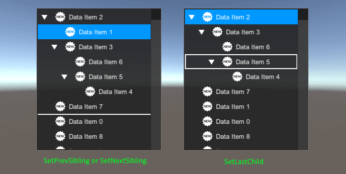

#Virtualizing TreeView Docs ##Overview The Virtualizing Tree View is a control that displays a hierarchical data. Virtualzing Tree View implements drag & drop, data binding and selection functions. It is highly customizable and can be used to display large collections of data (1000+ items).

##Getting Started
- Create Canvas.
- Add VirtualizingTreeView.prefab from
/Battlehub/RTEditor/Content/Runtime/UIControls/VirtualizingTreeView/Prefabs to hierarchy. - Create GettingStarted.cs script and add it to VirtualizingTreeView Game Object.
- Hit Play.
//GetStarted.cs
using System.Collections.Generic;
using UnityEngine;
using UnityEngine.UI;
using Battlehub.UIControls;
//Example of hierarchical data item
public class ExampleDataItem
{
public string Name;
//... additional fields here ...//
public ExampleDataItem Parent;
public List<ExampleDataItem> Children;
public ExampleDataItem(string name)
{
Name = name;
Children = new List<ExampleDataItem>();
}
public override string ToString()
{
return Name;
}
}
public class GetStarted : MonoBehaviour
{
private VirtualizingTreeView m_treeView;
//root level data items
private List<ExampleDataItem> m_items;
void Start()
{
m_treeView = GetComponent<VirtualizingTreeView>();
//This event fired for each item that becomes visible
m_treeView.ItemDataBinding += OnItemDataBinding;
//This event is fired for each expanded item
m_treeView.ItemExpanding += OnItemExpanding;
//This event is triggered for each item after drag & drop
m_treeView.ItemDrop += OnItemDrop;
//Create data items
m_items = new List<ExampleDataItem>();
for(int i = 0; i < 1000; ++i)
{
m_items.Add(new ExampleDataItem("Data Item " + i));
}
//Populate tree view with data items
m_treeView.Items = m_items;
}
void OnDestroy()
{
if(m_treeView != null)
{
m_treeView.ItemDataBinding -= OnItemDataBinding;
m_treeView.ItemExpanding -= OnItemExpanding;
m_treeView.ItemDrop -= OnItemDrop;
}
}
void OnItemDataBinding(object sender, VirtualizingTreeViewItemDataBindingArgs e)
{
ExampleDataItem item = (ExampleDataItem)e.Item;
//Get the controls from ItemsPresenter and copy the data into them.
Text text = e.ItemPresenter.GetComponentInChildren<Text>(true);
text.text = item.Name;
Image icon = e.ItemPresenter.GetComponentsInChildren<Image>()[4];
icon.sprite = Resources.Load<Sprite>("IconNew");
//Notify the tree of the presence of child data items.
e.HasChildren = item.Children.Count > 0;
}
void OnItemExpanding(object sender, VirtualizingItemExpandingArgs e)
{
ExampleDataItem item = (ExampleDataItem)e.Item;
//Return children to the tree view
e.Children = item.Children;
}
void OnItemDrop(object sender, ItemDropArgs args)
{
if (args.DropTarget == null)
{
return;
}
//Handle ItemDrop event using standard handler.
m_treeView.ItemDropStdHandler<ExampleDataItem>(args,
(item) => item.Parent,
(item, parent) => item.Parent = parent,
(item, parent) => ChildrenOf(parent).IndexOf(item),
(item, parent) => ChildrenOf(parent).Remove(item),
(item, parent, i) => ChildrenOf(parent).Insert(i, item));
}
List<ExampleDataItem> ChildrenOf(ExampleDataItem parent)
{
if (parent == null)
{
return m_items;
}
return parent.Children;
}
}
You should see scrollable tree view with data items and drag & drop support:

Note
Full demo can be found in Assets/Battlehub/RTEditorDemo/Content/Runtime/UIControls/VirtualizingTreeView folder
##Virtualizing Scroll Rect
This class reuse "ui containers" to efficiently represent large data collections. UI containers are created only for a small visible part of data. VirtualizingScrollRect.cs can be found in Assets/Battlehub/RTEditor/Runtime/UIControls/VirtualizingTreeView folder.
Events:
event DataBindAction ItemDataBinding- raised when new portion of data become visible .
Fields:
Container Prefab- prefab, which is used to create instances of ui containers for data items.Virtual Content- parent of ui containers.
Properties:
IList Items { get; set; }- gets or sets list of data items.int ItemsCount{ get; }- gets the number of data items.int Index { get; set; }- gets or sets index of first visible data item.int VisibleItemsCount { get; }- gets the number of currently visible data items.
Methods:
bool IsParentOf(Transform child)- returns true if the Scroll Rect is the parent of the Transform.void InsertItem(int index, object item, bool raiseDataBindingEvent = true)- insert data item.void RemoveItems(int[] indices, bool raiseItemDataBindingEvent = true)- remove data items.RectTransform GetContainer(object obj)- returns the ui container for data item.RectTransform FirstContainer()- returns the first visible ui container.RectTransform LastContainer()- returns the last visible ui container.void ForEachContainer(System.Action<RectTransform> action)- run action for each ui container.void SetNextSibling(object sibling, object nextSibling)- reorder data items and ui containers.void SetPrevSibling(object sibling, object prevSibling)- reorder data items and ui containers.
##Virtualizing Items Control
This class implements drag and drop, insert, delete, reorder functions and triggers many useful events. It also serves as the base class for controls, such as listbox and treeview.
Implementation can be found in Assets/Battlehub/RTEditor/Runtime/UIControls/VirtualizingTreeView folder.
Events:
event EventHandler<ItemArgs> ItemBeginDrag- raised on begin drag.event EventHandler<ItemDropCancelArgs> ItemBeginDrop- raised on item drop.event EventHandler<ItemDropCancelArgs> ItemDragEnter- occurs when the pointer enters a new drop target.event EventHandler ItemDragExit- raised when pointer leaves drop area.event EventHandler<ItemArgs> ItemDrag- fired while dragging an item.event EventHandler<ItemDropArgs> ItemDrop- fired after item dropped.event EventHandler<ItemArgs> ItemEndDrag- raised when drag & drop operation completed.event EventHandler<SelectionChangedArgs> SelectionChanged- occurs when the selection is changed.event EventHandler<ItemArgs> ItemDoubleClick- triggered after double clicking on an item.event EventHandler<ItemArgs> ItemClick- triggered after clicking on an item.event EventHandler<ItemsCancelArgs> ItemsRemoving- triggered before removing items.event EventHandler<ItemsRemovedArgs> ItemsRemoved- triggered after removing items.event EventHandler IsFocusedChanged- raised when IsFocused value changed.event EventHandler Submit- on submit.event EventHandler Cancel- on cancel.event EventHandler<PointerEventArgs> Click- triggered after clicking on the tree view.event EventHandler<PointerEventArgs> PointerEnter- occurs when the pointer enters the tree view.event EventHandler<PointerEventArgs> PointerExit- occurs when the pointer leaves the tree view.event EventHandler<TDataBindingArgs> ItemDataBinding- occurs when a new ui container is created or an update is required.event EventHandler<TDataBindingArgs> ItemBeginEdit- occurs when the ui container enters edit mode, and the EditorPresenter becomes visible.event EventHandler<TDataBindingArgs> ItemEndEdit- occurs when the ui container exit edit mode, and the ItemsPresenter becomes visible.
Fields:
bool SelectOnPointerUp- select item on pointer up (default: false).bool CanUnselectAll- can the user unselect all items? If set to false then at least one item has to be selected (default: true).bool CanSelectAll- can the user select all items? (default:true).bool CanEdit- can the user edit items? (default: true).bool CanRemove- can the user remove items? (default: true).bool CanDrag- is drag & drop allowed? (default:true).bool CanReorder- Is the reordering of items allowed? (default: true).float ScrollSpeed- scrolling sensitivity.
Properties:
object DropTarget { get; }- get currently active drop target.object[] DragItems { get; }- get items that are currently dragging.ItemDropAction DropAction { get; }- get current drop action:- None,
- SetLastChild,
- SetPrevSilbing,
- SetNextSibling.
int SelectedItemsCount { get; }- get selected data items count.IEnumerable SelectedItems { get; set; }- get or set selected data items.object SelectedItem { get; set; }- get or set selected data item.int SelectedIndex { get; set; }- get or set index of selected data item.IEnumerable Items { get; set; }- data source.
Methods:
int IndexOf(object obj)- get the index of the data item.void SetIndex(object obj, int newIndex)- set index of data item.VirtualizingItemContainer GetItemContainer(object item)- get the visible ui container.ItemContainerData GetItemContainerData(object item)- get the state of the ui container.ItemContainerData Add(object item)- add data item.ItemContainerData Insert(int index, object item)- insert data item.void Remove(object item)- remove data item.void SetNextSibling(object sibling, object nextSibling)- reorder data items and ui containers.void SetPrevSibling(object sibling, object prevSibling)- reorder data items and ui containers.
##Virtualizing Drop Marker
The Virtualizing Drop Marker is used to highlight the drop location of the item. Virtualizing Drop Marker can be in one of the states defined in the ItemDropAction enum.
public enum ItemDropAction
{
None,
SetLastChild,
SetPrevSibling,
SetNextSibling
}

##Virtualizing Tree View
Structure:

Prefab:
/Battlehub/RTEditor/Content/Runtime/UIControls/VirtualizingTreeView/Prefabs/VirtualizingTreeView.
Script:
/Battlehub/RTEditor/Runtime/UIControls/VirtualizingTreeView/VirtualizingTreeView.cs.
Base Class: Virtualizing Items Control
Events:
event EventHandler<VirtualizingItemExpandingArgs> ItemExpanding-
triggered before the parent item expands.event EventHandler<VirtualizingItemCollapsedArgs> ItemCollapsed-
triggered after folding the parent item.
Fields:
bool SelectOnPointerUp- select item on pointer up (default: false).bool CanUnselectAll- If set to false then at least one item has to be selected (default: true).bool CanSelectAll- can the user select all items? (default:true).bool CanEdit- can the user edit items? (default: true).bool CanRemove- can the user remove items? (default: true).bool CanDrag- is drag & drop allowed? (default:true).bool CanReorder- Is the reordering of items allowed? (default: true).bool CanReparent- Is parent change allowed? (default: true).float ScrollSpeed- scrolling sensitivity.
Methods:
void AddChild(object parent, object item)- add child item.void RemoveChild(object parent, object item)- remove child item.bool Expand(object item)- expand item
fails and returns false if the element is not visible and is a descendant of the collapsed parent).void ExpandTo<T>(T item, Func<T,T> getParent)- expand all ancestors.void ExpandChildren<T>(T item, Func<T, IEnumerable> getChildren)- expand all descendants.void ExpandAll(T item, Func<T,T> getParent, Func<T, IEnumerable> getChildren)-
calls ExpandTo, then ExpandChildren.void Collapse(object item)- collapse item.
Examples:
//Select all root items
private VirtualizingTreeView m_treeView;
void Start()
{
m_treeView = GetComponent<VirtualizingTreeView>();
//..Initialization and data binding...
m_treeView.SelectionChanged += OnSelectionChanged;
m_treeView.SelectedItems = m_treeView.Items;
}
void OnDestroy()
{
if(m_treeView != null)
{
m_treeView.SelectionChanged -= OnSelectionChanged;
}
}
private void OnSelectionChanged(object sender, SelectionChangedArgs e)
{
if(e.NewItems != null)
{
foreach(object item in e.NewItems)
{
Debug.Log(item);
}
}
}
//Add children and expand selected items
public void Add()
{
foreach (ExampleDataItem parent in m_treeView.SelectedItems)
{
ExampleDataItem item = new ExampleDataItem("New Item");
parent.Children.Add(item);
item.Parent = parent;
m_treeView.AddChild(parent, item);
m_treeView.Expand(parent);
}
}
//Collapse selected items
public void Collapse()
{
foreach (DataItem selectedItem in TreeView.SelectedItems)
{
TreeView.Collapse(selectedItem);
}
}
//Expand selected items and their children
public void Expand()
{
foreach(ExampleDataItem selectedItem in m_treeView.SelectedItems)
{
m_treeView.ExpandAll(selectedItem, item => item.Parent, item => item.Children);
}
}
//Remove selected items
public void Remove()
{
foreach (ExampleDataItem selectedItem in m_treeView.SelectedItems.OfType<object>().ToArray())
{
m_treeView.RemoveChild(selectedItem.Parent, selectedItem);
}
}
Note
ExampleDataItem defined in Getting Started section.
##Virtualizing Tree View Item Structure:

Prefab:
/Battlehub/RTEditor/Content/Runtime/UIControls/VirtualizingTreeView/Prefabs/VirtualizingTreeViewItem.
Script:
/Battlehub/RTEditor/Runtime/UIControls/VirtualizingTreeView/VirtualizingTreeViewItem.cs.
Fields:
ItemPresenter- normal mode ui.EditorPresenter- edit mode ui.ItemLayout- reference to LayoutElement.